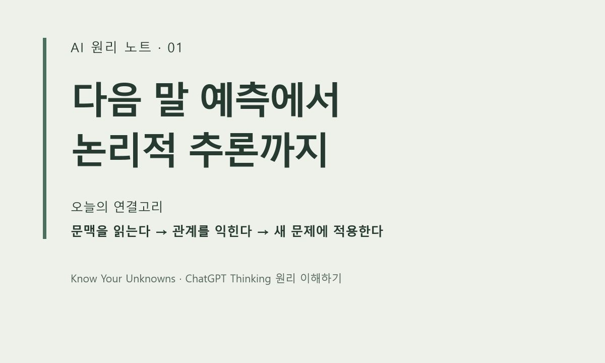
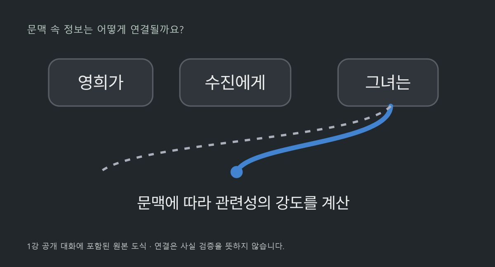

AI 원리 노트 · ChatGPT Thinking 1강

다음 말 예측에서 논리적 추론까지
챗GPT가 하는 일이 ‘다음 말 맞히기’라면,
사과 개수를 세고 논리 문제를 푸는 능력은 어디서 나올까요?
1강에서는 예측과 추론이 어떻게 이어질 수 있는지 살펴봅니다.
여기서 다음 말은 정확히는 글자나 단어 조각인 ‘토큰’입니다.
사과 5개를 샀습니다.
2개를 먹고, 1개를 친구에게 주었습니다.
남은 사과는 몇 개일까요?
답은 2개입니다. ‘사과’라는 단어만 알아서는 부족합니다.
처음 수량과 두 행동이 수량을 어떻게 바꾸는지 연결해야 합니다.
다음 표현을 정확히 예측하는 학습은
이런 규칙과 관계를 다루는 능력으로 이어질 수 있습니다.
모델은 학습하면서 예측 오류를 줄이도록
내부의 숫자인 파라미터를 조정합니다.
답을 만들 때 어텐션은 문맥 속 정보의 관련성을 계산합니다.
문장 안에서 떨어져 있는 정보도 연결해 반영할 수 있습니다.

위 그림은 1강 공개 대화의 원본 도식입니다.
연결선은 관련성을 설명하며, 지시 대상의 정답이나 사실 검증을 뜻하지 않습니다.
추론을 강화한 모델은 추가 학습과 계산을 통해
문제를 나누고, 해법을 검토하고, 오류를 수정할 수 있습니다.
그래도 유창한 문장, 타당한 추론, 정확한 사실은 각각 확인해야 합니다.
그럴듯하게 설명했다고 검증된 답이 되는 것은 아닙니다.
다음 말을 잘 예측하는 학습은
규칙과 관계를 다루는 능력으로
이어질 수 있습니다.
추론의 결과는 따로 검증해야 합니다.
이것이 1강의 핵심입니다.
자세한 설명과 선택형 실습은 아래 1강에서 이어집니다.
공개 대화의 1강을 블로그용으로 요약·편집했습니다.
본문 전체와 출처는 연결된 1강 페이지에서 확인할 수 있습니다.